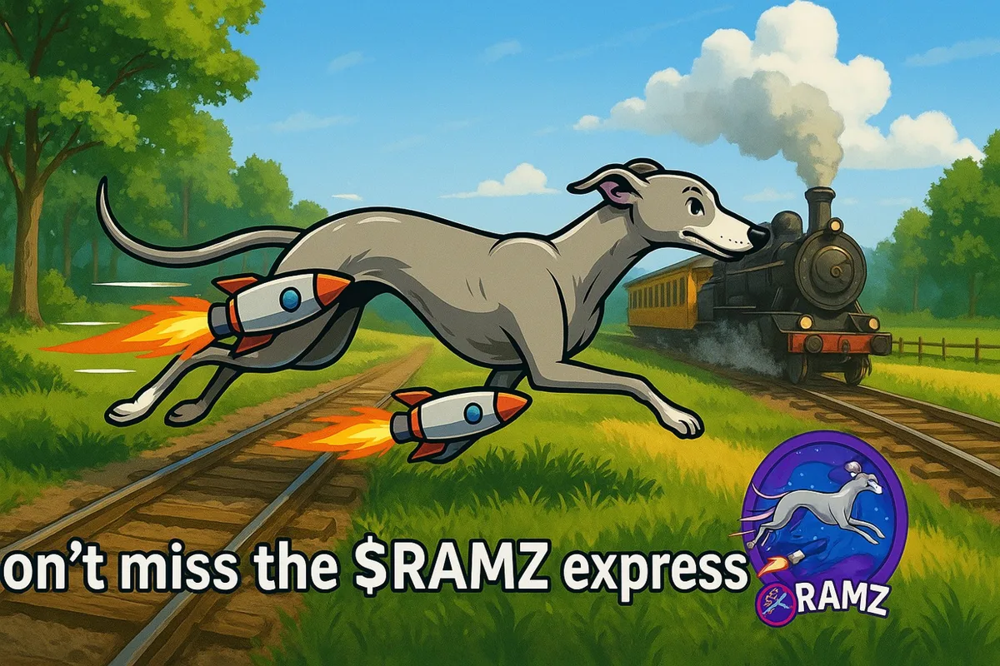

At some point I put rocket boots on a whippet. If you’ve ever seen my dog Ramsey run, you’ll appreciate how unnecessary that was.
In August 2025, I researched and promoted a Solana meme coin named after her. I called it $RAMZ and gave it a tagline that still makes me smile: “Ramsey, the fastest meme on Solana.” I haven’t launched the token. So far, I’ve ended up with a campaign website draft, a stack of race posters, and a picture of my dog outrunning a train.

Ramsey versus a steam locomotive. Apparently the rocket boots came in handy.Learning Solana with a dog for a case study
It was more fun to learn about Solana when I had a specific, slightly ridiculous question to follow. Suppose someone saw the train poster and went looking for $RAMZ. What would they actually be looking for? The ticker was something I could type on any picture. A token on Solana would have its own mint address, and that address would identify it even if someone else picked the same name. Suddenly I had a reason to care about a detail I might otherwise have skimmed.
Exploring pump.fun brought me back to the person on the other side of the screen. I could spend an evening thinking through a token idea. Someone scrolling past it might give me a second. What could they get out of Ramsey in that second? My favorite answer was a poster that says “Usain runs… Ramsey teleports.” You can get the joke even if you have no idea what Solana is.
What promoting $RAMZ taught me
I tried giving Ramsey a supporting cast. Doge, Pepe, and Bonk line up beside her in one design. “They walked so Ramsey can run” gives the older memes a little credit and gives my dog an excuse to fly past them. Then I tried the opposite approach. The billboard poster has almost nothing to explain. Ramsey is already halfway through the sign.
Putting those pictures next to each other taught me more about branding than picking a logo in isolation. The gray whippet, the little rockets, and the way she stretches out in midair do most of the work. I could change the setting from a running track to a kart race and still recognize her. That gave me room for my personal favorite kind of detour: a Michael Jackson dance pose and the words “Whippet Good.”
The harder writing was on the campaign site. I sketched out a roadmap, meme contests, and even a name for the community: the Whippers. Naming a group was easy. Imagining what somebody would enjoy doing in that group on an ordinary Tuesday was a better marketing exercise. Making their own version of the race poster made sense to me. Reading another paragraph about how fast Ramsey was? Probably less so.
I’m leaving the door open to launching $RAMZ. If I revisit it, I’d start with a question I can already test with the memes: does anyone like this joke enough to make their own version? The part I enjoyed enough to keep working on was figuring out how to introduce people to my dog, one increasingly absurd picture at a time. Of everything in the project folder, the image that sums it up best might be the one where all the other characters brought go-karts. Ramsey just showed up as herself.